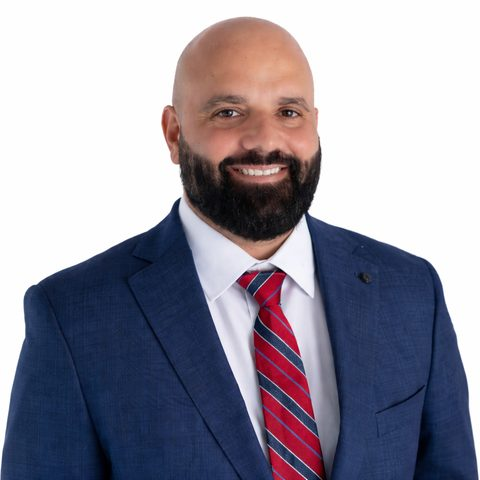

David Meldofsky, California-licensed attorney.
David built Lawsuit Center as an attorney-led lawsuit research and case-review platform that organizes active claim categories and connects people to law firms with active intake. He is also the founder of Lawsuit Informer, the companion editorial site.
Experience that shaped the platform.
David is a California-licensed attorney who has represented injured clients and worked extensively in legal intake, claim screening, and referral environments — the parts of the legal system where decisions get made about which situations may fit an active lawsuit and which don't.
That experience shapes how Lawsuit Center is structured: practical claim categories organized around toxic exposure, product liability, drug injury, medical device injury, asbestos, environmental contamination, and the other claim types people commonly research — described in the same plain language a good intake conversation would use.
- Bar admission
- California (No. 263673)
- Experience
- Representation of injured clients; legal intake and claim review
- Other projects
- Lawsuit Informer (editorial platform)
Why Lawsuit Center exists.
People usually begin lawsuit research with a real concern: a diagnosis, an exposure, a product, a medication, a device, an accident, or a pattern of similar experiences. Most of what they find online is either generic legal blog content or aggressive lead-gen pages that obscure who's behind them.
Lawsuit Center exists to be the alternative: an attorney-built layer that organizes claim categories honestly, labels paid placement clearly, and connects people who submit information to firms with active intake in the relevant category. The structure is narrow on purpose.
How information is organized.
Plain-language categorization, clear disclosure, and separation between editorial content and paid firm visibility.
Topic-based organization
Categories built around exposure, product, condition, injury, and claim type — not around which firms paid most for visibility.
Pattern-focused, not promise-based
Each category explains common claim patterns without promising eligibility, compensation, or results.
Honest case review information
What happens after a visitor submits information — including what isn't guaranteed and what doesn't form an attorney-client relationship.
Disclosed placement and referrals
Paid law firm visibility and referral arrangements are labeled. Editorial categorization stays separate from advertising.
Published legal commentary.
David's commentary centers on two themes: the widening gap between EPA's narrowing PFAS regulatory posture and an expanding PFAS litigation landscape, and the legal questions raised by AI — both the consumer-side risk of relying on AI-generated legal content without visible editorial review, and the unsettled question of whether AI output is a product or content for liability purposes. His California bar status can be verified through the State Bar record linked above.
Law360
Is AI Output a Product or Content? — guest commentary on whether AI-generated output should be treated as a product subject to liability or as content, the central question in the emerging wave of AI injury litigation.
Attorney at Law Magazine
Before You Contact a Lawyer: How to Evaluate Lawsuit Information Online in the AI Era — a bylined feature on telling education apart from advertising and intake before contacting a lawyer.
Law360
PFAS OUT Cannot Replace Broad Drinking Water Protections — guest commentary arguing EPA's narrowed PFAS reporting posture is a regulatory shift, not a safety determination.
Daily Journal
PFAS Drinking Water Rules Are Changing as Lawsuits Surge — guest commentary on federal and California drinking water standards and why litigation is expanding as regulation contracts.
InsideEPA
Lawyer Suggests EPA's Narrowed SDWA PFAS Focus Gives Mixed Message — cited commentary on the mixed signal EPA's narrowed focus sends to regulated entities and affected communities.
AGI Ethics News
AGI, rights, and international boundaries — cited on how governments can regulate foreign AGI through its points of contact: app stores, payment rails, API access, and the companies that deploy it, rather than by inspecting the models.
Lawsuit Center and Lawsuit Informer.
David also founded Lawsuit Informer, an attorney-led editorial platform focused on lawsuits, toxic exposure, product liability, consumer safety, and legal process topics.
Lawsuit Informer is the editorial side — articles, guides, and explainers. Lawsuit Center is the action-oriented companion — claim categories, free tools, case review, and disclosed sponsored visibility.
- Lawsuit Informer
- Editorial: articles, explainers, lawsuit research
- Lawsuit Center
- Action: case review, claim categories, disclosed sponsored visibility
- Connection
- Both attorney-built, plain-language, clearly disclosed
What this website is and isn't.
Lawsuit Center is educational and commercial. It is not a law firm and does not provide legal advice or representation. Viewing this page or submitting information through the site does not create an attorney-client relationship.
Some pages include sponsored law firm listings, paid placements, or other attorney advertising — all labeled where they appear. When a case review request is connected to a participating firm, Lawsuit Center may receive a referral or marketing fee paid by the firm out of attorney fees, not as an additional cost to the client. Paid placement and referral arrangements are not recommendations or endorsements of any attorney or law firm.
Explore Lawsuit Center.
Browse lawsuit categories, learn how case review works, or request a preliminary review if your situation may fit an active claim pattern.
A case review request does not guarantee eligibility, compensation, contact from a law firm, or legal representation.